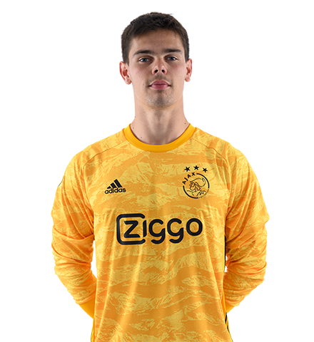

| מספר | שם שחקן | עמדה | מס' הופעות | מס' שערים | מס' בישולים |
|---|---|---|---|---|---|
| 1 | ברונו וארלה | שוער | 0 | 0 | 0 |
| 24 |  אנדרי אוננה אנדרי אוננה |
שוער | 30 | 0 | 0 | 33 | דומיניק קוטסארקי | שוער | 0 | 0 | 0 |
| 3 | יואל ולטמן | מגן | 27 | 3 | 0 |
| 4 | אדסון אלווארז | מגן | 17 | 2 | 0 |
| 5 | קיקי פיירי | מגן | 0 | 0 | 0 |
| 12 | נוסיר מזרוואי | מגן | 18 | 0 | 0 |
| 17 | דיילי בלינד | מגן | 26 | 1 | 0 |
| 21 | ליסנדרו מרטינז | מגן | 29 | 2 | 0 |
| 28 | סרג'יניו דסט | מגן | 24 | 2 | 0 |
| 31 | ניקולס טגליאפיקו | מגן | 27 | 5 | 0 |
| 6 | דוני ואן דה ביק | קשר | 26 | 8 | 6 |
| 8 |  קרל איטינג קרל איטינג
| קשר | 1 | 0 | 0 |
| 15 | סיאם דה יונג | קשר | 7 | 0 | 1 |
| 18 | רזואן מארין | קשר | 15 | 0 | 0 |
| 19 | זאכריא לביאד | קשר | 3 | 1 | 1 |
| 22 | חכים זיאש | קשר | 28 | 9 | 5 |
| 26 | יורגן אלקמנקאפ | קשר | 3 | 2 | 0 |
| 27 | נואה לנג | קשר | 9 | 4 | 2 |
| 29 | ראיין גרוונבאך | קשר | 5 | 1 | 0 |
| 7 | דויד נרס | חלוץ | 20 | 6 | 1 |
| 9 | קלאס יאן הונטלר | חלוץ | 22 | 9 | 0 |
| 7 | דושאן טאדיץ' | חלוץ | 30 | 11 | 5 |
| 11 | קווינסי פרומס | חלוץ | 11 | 14 | 2 |
| 23 | לאסינה טראורה | חלוץ | 4 | 1 | 0 |
| 23 | חסן באנדה | חלוץ | 0 | 0 | 0 |
| מקום בטבלה | קבוצה | משחקים | ניצחונות | הפסדים | מאזן שערים | נקודות |
|---|---|---|---|---|---|---|
| 1 |  אייאקס אמסטדם אייאקס אמסטדם
| 18 | 14 | 2 | 42 | 44 |
| 2 | אלקמאר | 18 | 13 | 2 | 28 | 41 |
| 3 | פ.ס.וו איינדהובן | 18 | 10 | 4 | 19 | 34 |
| 4 | וילם II | 18 | 10 | 3 | 5 | 33 |
| 5 |  פיינורד פיינורד
| 18 | 8 | 7 | 5 | 31 |
| 6 | ויטסה ארנהיים | 18 | 9 | 3 | 8 | 30 |
| 7 | אורטרכט | 18 | 9 | 2 | 7 | 28 |
| 8 | הירנביין | 18 | 7 | 7 | 5 | 26 |
| 9 |  הראקלס הראקלס
| 18 | 7 | 5 | 5 | 26 |
| 10 | כרוניגן | 18 | 7 | 4 | 3 | 25 |
| 11 | ספרטה רוטרדם | 18 | 6 | 5 | 3- | 23 |
| 12 | טוונטה | 18 | 5 | 4 | 11- | 19 |
| 13 | פורטונה סיטארד | 18 | 5 | 4 | 19- | 19 |
| 14 |  אמן אמן
| 18 | 5 | 3 | 14- | 18 |
| 15 | זוולה | 18 | 5 | 1 | 27- | 15 |
| 16 | וונלו | 18 | 5 | 0 | 18- | 13 |
| 17 | דן האג | 18 | 3 | 4 | 18- | 13 |
| 18 | וולוויק | 18 | 3 | 2 | 21- | 11 |
| תאריך המשחק | שעת התחלה | איצטדיון | יריבה | שופט | מפעל |
|---|---|---|---|---|---|
| 18/01/2020 | 19:00 | אמסטרדם ארנה | ויטסה ארנהיים | מתאו להוז | ליגת הולנדית |
| 25/01/2020 | 20:00 | פיליפס ארנה | פסו איינדהובן | צ'ונייט שאקיר | גביע הולנדי |
| 01/02/2020 | 21:00 | אמסטרדם ארנה | ספרטה רוטרדם | דמיר סקומינה | ליגה הונלדית |
| 08/02/2020 | 22:00 | פיינורד ארנה | פיינורד | לירן ליאני | גביע הולנדי |
| 15/02/2020 | 19:00 | אמסטרדם ארנה | טוונטה | קלמונט טורפאן | ליגה הולנדית |
| 22/02/2020 | 20:00 | קאמפ נואו | ברצלונה | אוראל גרינפלד | ליגת האלופות |
ההיסטוריה שלנו
מועדון הכדורגל האמסטרדמי אייאקס (בהולנדית: Amsterdamsche Football Club Ajax) הידוע בקיצור כאייאקס אמסטרדם (בהולנדית: Ajax Amsterdam) או פשוט כאייאקס, הוא מועדון כדורגל מהעיר אמסטרדם שבהולנד. קבוצת הכדורגל של אייאקס היא הקבוצה המצליחה בהולנד עם 34 תוארי אליפות ו-19 גביעים והיא אחת משלוש הקבוצות היחידות בהולנד (יחד עם פ.ס.וו. איינדהובן ופיינורד) שמעולם לא ירדו לליגת המשנה.
קבוצת הכדורגל של אייאקס נוסדה בשנת 1893, בידי פלוריס סטמפל ומקור שמה הוא הגיבור המיתולוגי איאס. בשנת 1896 סטמפל נאלץ לסגור אותה, עקב ריבוי מועדוני כדורגל באמסטרדם. הקבוצה חזרה לפעילות בשנת 1900. בשנות ה-70 של המאה ה-20 הייתה קבוצת אייאקס לשם דבר באירופה, כשזכתה בשלושה גביעים רצופים בעזרת שיטת הכדורגל הטוטאלי שפותחה על ידי מאמנה באותה תקופה, רינוס מיכלס. בשנת 1972 זכתה אייקס בטרבל (אליפות, גביע וגביע האלופות) והיא אחת משבע קבוצות בלבד באירופה שעשו זאת יחד עם ברצלונה, אינטר מילאנו, סלטיק, פ.ס.וו. איינדהובן, באיירן מינכן ומנצ'סטר יונייטד. אייאקס היא גם אחת מתוך ארבע קבוצות באירופה שזכו בכל תואר אפשרי למועדון אירופאי יחד עם יובנטוס, באיירן מינכן ומנצ'סטר יונייטד. בנוסף אייקס זכתה בכל שלוש התחרויות העיקריות של אופ"א (גביע אופ"א, גביע מחזיקות הגביע וגביע האלופות) והיא אחת מחמש הקבוצות היחידות שעשו זאת (בנוסף ל- יובנטוס, צ'לסי, מנצ'סטר יונייטד ובאיירן מינכן) ואחת מארבע הקבוצות שזכו בכל תואר אפשרי למועדון אירופאי. כמו כן, איאקס היא אחת משלוש הקבוצות היחידות בהיסטוריה,[1] אשר זכו בגביע ביניבשתי באותה שנה בה זכו בטרבל אירופי. הישג זה נרשם בעונת 1971/1972.
הקבוצה נקראת על שם הגיבור המיתולוגי איאס, שם שמתועתק כ-Ajax ולכן רבים מבטאים אותו כ"אייאקס". גיבור זה חבוש בקסדה מופיע בסמל המועדון. אייאקס משחקת באצטדיון יוהאן קרויף ארנה. הקבוצה נחשבת לקבוצה "יהודית". היסטורית זה התפתח, ככל הנראה, בגלל קרבת האצטדיון המקורי לשכונה היהודית באמסטרדם, ומשום שחלק משחקניה והנהלתה, כמו גם מספר יחסית גדול של אוהדים, היו יהודים.[2] עם הזמן אוהדיה הקנאים אימצו לעצמם "זהות" זו - הם מכנים עצמם יהודים גם אם אינם יהודים, ומתעטרים בסמלי מגן דוד ודגלי ישראל. מסיבה זו, שירי נאצה רבים וקריאות גנאי של אוהדי הקבוצות היריבות, ובייחוד פיינורד, קשורים באנטישמיות ובהתייחסות שלילית לשואה.
הקשר עם הקהילה היהודית
אייאקס אמסטרדם היא קבוצת כדורגל שמזוהה עם מגן דוד, דגל ישראל וסמלים יהודיים. הסיבה לכך היא לא רק היסטורית או מקומית, אלא קשורה גם למערכת היחסים עם אוהדי הקבוצות היריבות. קבלו את הסיפור המלא
כל מי שהזמין בחייו טיסות לאמסטרדם כדי לראות כדורגל ודאי שם לב לדגלי ישראל ולמגני דוד ביציעים של אוהדי הקבוצה המקומית. אייאקס אמסטרדם מזוהה עם יהודים לא פחות מאשר קבוצות ישראליות בתל אביב, חיפה וירושלים, ומסתבר שיש לכך שורשים היסטוריים עמוקים.
מצורף קטע וידיאו של אוהדי אייקס אמסטרדם שרים את הבה נגילה באיצטדיונם הביתי
האקדמיה של אייאקס
רובין מולר ואן מופס היה אחד מהילדים בני המזל שזכו להתקבל לבית הספר היוקרתי לכדורגל של אייאקס. בית הספר קרוי "דה טוקומסט אקדמי" (De Toekomst Academy), שפירושו "אקדמיית העתיד", והוא ממוקם בסמוך לאיצטדיון, במתחם מפואר ומצויד היטב: שבעה מגרשי אימון, איצטדיון קטן שיכול להכיל אלף צופים, חדרי כושר והלבשה, חדר אוכל וכיתות לימוד.
האיצטדיון של אייאקס הוא פסגת השאיפות של בני המזל והכישרון הבאים בשערי האקדמיה, ובבית הספר הם עושים את הדרך הארוכה להגשמתן. כשהיה בן שבע ביקש רובין מהוריו גרביים של אייאקס כמתנת יום הולדת. שנתיים אחר כך כבר קיבל תיק מלא גרביים ותלבושת בצבעים אדום־לבן. מרוב התרגשות, הוא מספר, "ישנתי עם התיק קרוב אלי, מתחת למיטה". רובין אותר על ידי ציידי הכישרונות של אייאקס, המכונים "סיירים" (scouters), רבים מהם שחקני עבר בקבוצה, היוצאים למצוא את כישרונות העתיד בעקבות מכתבי ילדים וממליצים, למשל מורים לספורט. הסיירים הגיעו למשחק חובבים שנערך בשכונה של רובין וראו אותו בפעולה. מכיוון שעשה עליהם רושם של בעל כישרון, הזמינו אותו למבדקים במועדון, ומאז, כבר 11 שנים, הוא מתאמן ומשחק במסגרות הצעירים של הקבוצה. כיום רובין הוא שחקן מקצועני בקבוצה השנייה של אייאקס, Ajax 2. הוא יוכל לשחק בה במשך שנתיים לכל היותר. אם יצטיין, יזכה לעלות לקבוצה הראשונה. אם לא, יחפש את עתידו מחוץ לאייאקס.בני ה־8־12 שאותרו על ידי ציידי הכישרונות מגיעים שלוש פעמים בשבוע לאחר שעות הלימודים לאימון, בדרך כלל בליווי הוריהם. פעם בשבוע מתקיים משחק כמו־מקצועני. מסגרת הכשרת הכדורגלנים הצעירים נתפסת גם ככר ההשבחה של הכדורגל ההולנדי. למטרה זו, וכמובן כעתודה למועדון, נבנתה באייאקס תוכנית עבודה ייחודית, ומאמנים רבים מכל העולם באים ללמוד אותה, בתקווה שיוכלו ליישם אותה בארצותיהם. התוכנית נקראת TIPS, ויש בה ארבעה מרכיבים – טכניקה (T), ראיית משחק (I), אישיות (P) ומהירות (S), החיוניים ביותר להכשרת כדורגלן מקצועני.
כוכבים רק על המגרש
חשיבות רבה מיוחסת להישגים לימודיים. אחד ממנהלי התוכנית, יור רונר, מספר שהוא בקשר עם יותר מחמישים בתי ספר באמסטרדם ובסביבתה. "חשוב שהילדים לא יזניחו את לימודיהם הכלליים, גם כי לא לעד יהיו שחקני כדורגל. היום השעיתי תלמיד ליומיים מפני שלא היה טוב בלימודים", הוא אומר. הישגי הילדים באימונים נרשמים ב"דרכון אישי" מיוחד, שאותו הם נושאים בגאווה. באמצע השנה נעשית הערכה על התקדמותם באימונים ובלימודים הכלליים, והילדים מקבלים משוב על ביצועיהם. בסוף כל שנה מתבצע ניפוי, ומי מהילדים שלא עמד בדרישות התוכנית עוזב את האקדמיה.
מגיל 12 עד 16 מתאמנים הנערים כבר ארבע פעמים בשבוע, ומשחקים פעם בשבוע. מיניבוסים מיוחדים אוספים את הילדים מבתי הספר שלהם אחר הצהריים. הם אוכלים ארוחת צהריים בצוותא, ואחר כך לומדים ומכינים שיעורים בסיוע מורים שעובדים בעבור אייאקס. אימון הכדורגל נמשך שעתיים, עד לפנות ערב. אז מתכנסים הילדים שוב לארוחת ערב משותפת וללימודים נוספים. בערב הם מתפזרים לבתיהם.
מגיל 16 כבר נקראים הנערים "נבחרת 1A". לשורותיהם מצטרפים לעתים נערים ממדינות אחרות. אלה מאותרים על ידי 25 סיירים שעובדים באופן בלעדי עם אייאקס. כל נער מחו"ל מאומץ על ידי משפחה הולנדית, והיא מספקת לו בית חם ומסייעת בקליטתו התרבותית. בנוסף ללימודים כלליים הנערים הזרים לומדים במסגרת המועדון גם הולנדית. כיום משתתפים בתוכנית גם שחקנים מארגנטינה, מפינלנד וממרוקו, וגם שחקן מכבי חיפה שי בירוק התאמן לאחרונה בנבחרת 1A.
"בכל שנה רק אחד או שניים מהנערים יצליחו להתקבל כשחקנים בנבחרת הראשונה או השנייה", אומר רונר ומדגיש שבהכשרת הכדורגלנים כרוכים גם אימונים מנטליים רבים. "התוצאות מדברות בעד עצמן", הוא מתגאה. "כיום עשרה מ־22 שחקני הקבוצה הבוגרת הם מהאקדמיה, ורוב המאמנים באקדמיה הם שחקני עבר של אייאקס. למאמן יש תפקיד חשוב בהכשרת שחקן העתיד. הוא גם דמות אב מחבק וגם איש קשוח ותובעני".
השנה לומדים באקדמיה 203 ילדים ונערים, בהם תשעים בגילאי 8־12. רונר מסרב לאפשר לנו לראיין תלמיד צעיר. "אנחנו לא מטפחים כוכבי תקשורת, ואנו נגד מתן עדיפות לילד זה או אחר. הם צריכים להיות כוכבים על המגרש".